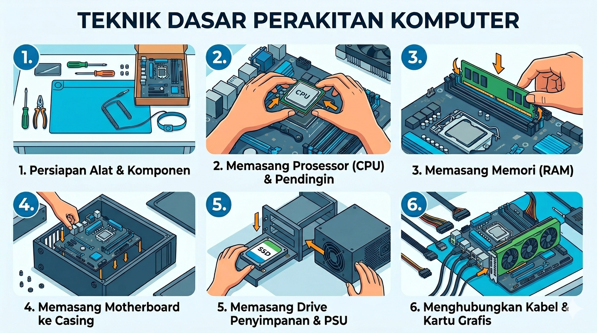
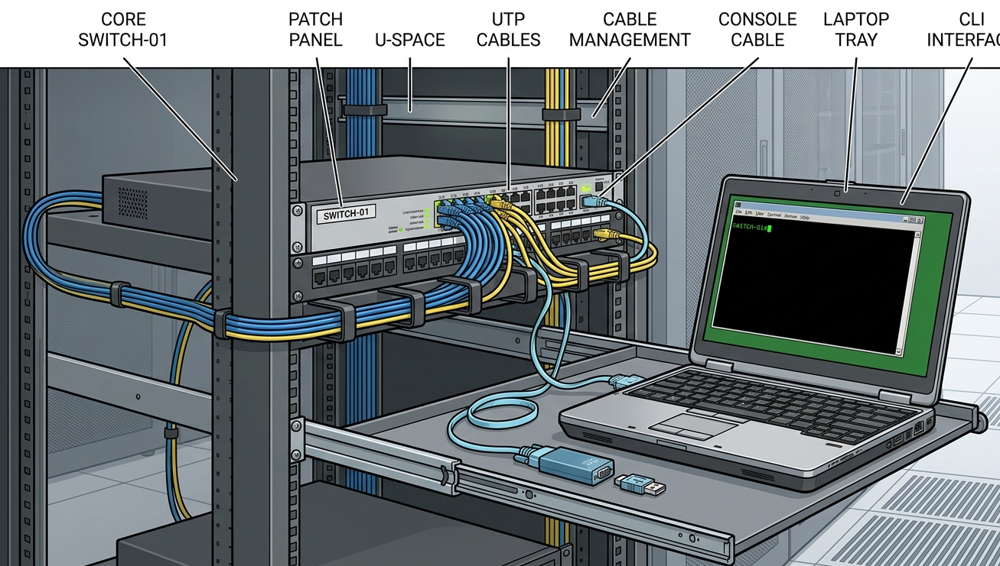
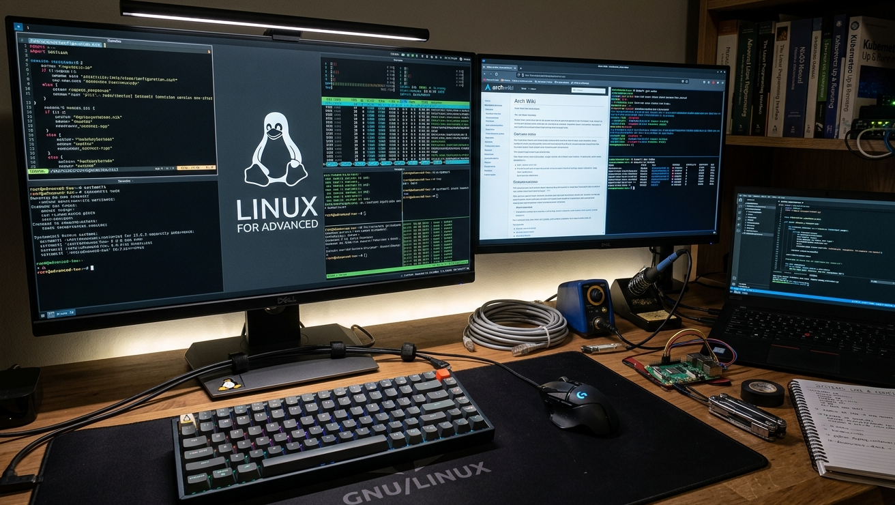
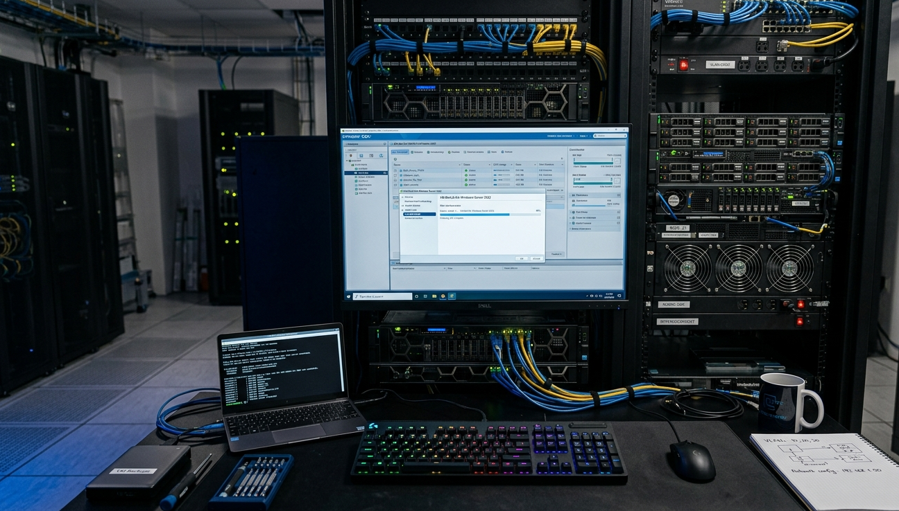
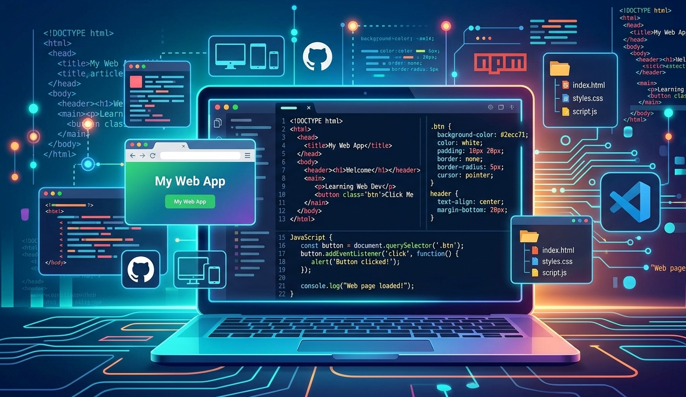

PT Permata Gowlung Digital menghadirkan program pelatihan
IT modern untuk membantu pelajar, mahasiswa, karyawan,
maupun perusahaan dalam meningkatkan kemampuan teknologi informasi.
Program training kami dirancang secara praktis,
mudah dipahami, dan langsung dapat diterapkan
pada kebutuhan dunia kerja maupun bisnis modern.
Fokus pada praktik langsung dan studi kasus agar peserta mudah memahami implementasi nyata.
Dibimbing oleh praktisi IT yang memiliki pengalaman di bidang infrastruktur, sistem, dan teknologi digital.
Menggunakan tools dan teknologi yang relevan dengan kebutuhan industri saat ini.
Peserta akan memperoleh skill yang dapat digunakan untuk karir profesional maupun pengembangan bisnis.

Memahami komponen komputer, perakitan hardware, troubleshooting dasar, dan instalasi sistem operasi.

Belajar dasar networking, IP Address, router, switch, kabel jaringan, dan konfigurasi jaringan sederhana.
Memahami penggunaan Linux, command line, file system, serta berbagai tools open source.

Pelatihan lanjutan mengenai server Linux, security, automation, monitoring, dan administrasi sistem.

Belajar virtualisasi, hypervisor, server infrastructure, cloud dasar, dan implementasi virtual machine.

Memahami dasar HTML, CSS, JavaScript, dan pengembangan website modern.